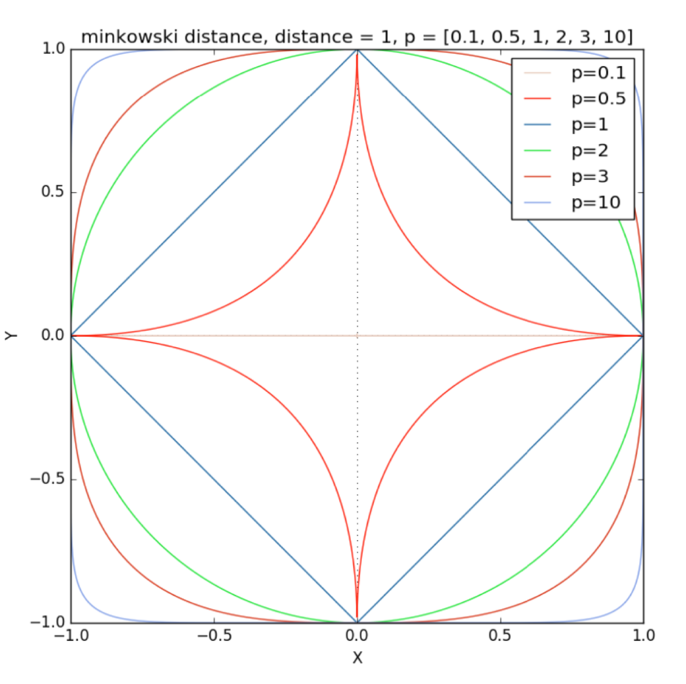

[矩阵论]2.1向量范数
\[ \newcommand\norm[1]{\Vert#1\Vert} \]
概念与基本性质
向量范数的定义
设 \(V\) 是数域 \(K\) 上的线性空间，对 \(V\) 的任一向量 \(x\)，定义实值函数 \(\norm x\)，满足：
- 非负性：\(\norm x\geq0\)，且 \(\norm{x}=0\iff x=0\)
- 齐次性：\(\norm{kx}=|k|\norm{x},\,k\in K,\,x\in V\)
- 三角不等式：\(\norm{x+y}\leq\norm{x}+\norm{y},\,x,y\in V\)
注：\(|k|\) 表示 \(k\) 的绝对值（\(K=\mathbb R\)）或模（\(K=\mathbb C\)）。
向量范数的性质
性质 1（范数是凸函数）： \[ \norm{(1-\lambda)x+\lambda y}\leq(1-\lambda)\norm x+\lambda\norm y,\quad 0\leq\lambda\leq1 \] 性质 2（范数的乘法）：若 \(\norm{\cdot}\) 是 \(V\) 上的向量范数，则 \(k\norm{\cdot}\) 仍然为向量范数，其中 \(k>0\).
性质 3（范数的复合）：设 \(\norm{\cdot}_\text{comp}\) 是 \(\mathbb R^m\) 上的范数，且对 \(x\in\mathbb (R^+)^m\) 为单调增加的。那么，给定 \(m\) 个 \(n\) 维线性空间 \(V\) 上的范数 \(\norm{\cdot}_i\,(i=1,\ldots,m)\)，可以定义复合范数为： \[ \norm{x}=\norm{U(x)}_\text{comp},\quad \text{where }\ U(x)=(\norm{x}_1,\ldots,\norm{x}_m)^T \]
证明：非负性和齐次性是显然的，下面证明三角不等式。 \[\begin{align}\norm{x+y}&=\norm{U(x+y)}_\text{comp}\\&\leq\norm{U(x)+U(y)}_\text{comp}&&U(x+y)\leq U(x)+U(y)\\&\leq\norm{U(x)}_\text{comp}+\norm{U(y)}_\text{comp}\\&=\norm{x}+\norm{y}\end{align}\] 证毕。
例如：设 \(\norm\cdot_f\) 和 \(\norm\cdot_g\) 是线性空间 \(V\) 上的两个向量范数，则：
- \(\norm\cdot_f+\norm\cdot_g\) 是 \(V\) 上的向量范数
- \(\max\{\norm\cdot_f,\norm\cdot_g\}\) 是 \(V\) 上的向量范数
- \(\left[(\norm\cdot_f)^2+(\norm\cdot_g)^2\right]^{1/2}\) 是 \(V\) 上的向量范数
性质 4（范数的合成）：设 \(n\) 维线性空间 \(V=V_1\oplus V_2\oplus\cdots\oplus V_m\)，且 \(\norm\cdot_i\,(i=1,\ldots,m)\) 为线性子空间 \(V_i\) 上的范数。设 \(\norm{\cdot}_\text{comp}\) 是 \(\mathbb R^m\) 上的范数，且对 \(x\in\mathbb (R^+)^m\) 为单调增加的，则对任意 \(x\in V\)，存在唯一分解 \(x=x_1+\cdots+x_n\)，其中 \(x_i\in V_i\). 定义合成范数为： \[ \norm x=\norm{U(x)}_\text{comp},\quad\text{where }\ U(x)=(\norm{x_1}_1,\ldots,\norm{x_m}_m)^T \]
证明与性质 3 是类似的。
定义（均衡闭凸集）：线性空间 \(V\) 的闭凸集 \(\Omega\) 若满足：\(x\in\Omega\implies \lambda x\in\Omega\,(|\lambda|\leq1)\)，那么 \(\Omega\) 为均衡闭凸集。
性质 5（范数的几何性质：范数与均衡闭凸集一一对应）：若 \(\norm\cdot\) 为 \(V\) 上的向量范数，则 \(\Omega=\{x\mid\norm x\leq 1\}\) 是 \(V\) 上的均衡闭凸集；反之，若 \(\Omega\) 是 \(V\) 上的均衡闭凸集，且 \(\Omega\) 含有内点，即包含一个小单位球，则可以定义函数 \(P(x)\) 如下： \[ P(x)=\begin{cases}\min\{\lambda>0\mid x/\lambda\in\Omega\}&&x\neq0\\0&&x=0\end{cases} \] 那么 \(P(x)\) 为 \(V\) 上的范数。
补充：绝对范数与单调范数
绝对范数：设 \(x=(\xi_1,\ldots,\xi_n)^T\in\mathbb C^n\)，记 \(|x|=(|\xi_1|,\ldots,|\xi_n|)^T\in\mathbb R^n\)，若 \(\mathbb C^n\) 上的范数 \(v\) 满足条件： \[ v(x)=v(|x|),\quad \forall x\in\mathbb C^n \] 则称 \(v\) 为绝对范数。
单调范数：若对于任意 \(x,y\in\mathbb C^n\)，范数 \(v\) 满足： \[ |x|\leq |y|\implies v(x)\leq v(y) \] 则称 \(v\) 为单调范数。
定理：\(v\) 为绝对范数的充要条件是 \(v\) 为单调范数。
具体实例
2-范数
\[ \norm x_2=\sqrt{|x_1|^2+|x_2|^2+\cdots+|x_n|^2} \]
1-范数
\[ \norm x_1=|x_1|+|x_2|+\cdots+|x_n| \]
\(\infty\)-范数
\[ \norm x_\infty=\max_{i=1}^n |x_i| \]
\(p\)-范数
\[ \norm x_p=\left(|x_1|^p+|x_2|^p+\cdots+|x_n|^p\right)^{1/p}\quad\quad p\geq 1 \]
当 \(0\leq p<1\) 时并不是范数，因为不满足三角不等式，但是在实际应用中仍然有重要应用。

为了证明 \(p\)-范数满足三角不等式，首先需要证明一个引理和 Hölder 不等式。
引理：对任意实数 \(\alpha>0,\beta>0\)，都有 \(\alpha\beta\leq \frac{\alpha^p}{p}+\frac{\beta^q}{q}\)，其中 \(p>1,q>1\) 且 \(\frac{1}{p}+\frac{1}{q}=1\).
证： \[\begin{align}\frac{\alpha^p}{p}+\frac{\beta^q}{q}&\geq\frac{q\alpha^p+p\beta^q}{pq}=\frac{q\alpha^p+p\beta^q}{p+q}\\&=\frac{(\alpha^p+\cdots+\alpha^p)+(\beta^q+\cdots+\beta^q)}{p+q}\\&\geq\sqrt[p+q]{\alpha^{pq}\beta^{pq}}=\sqrt[pq]{\alpha^{pq}\beta^{pq}}=\alpha\beta\end{align}\] 证毕。
Hölder 不等式：对任意 \(\xi_k,\eta_k\in\mathbb C\,(k=1,\ldots,n)\)，有： \[\sum_{k=1}^n|\xi_k||\eta_k|\leq\left(\sum_{k=1}^n|\xi_k|^p\right)^{1/p}\left(\sum_{k=1}^n|\eta_k|^q\right)^{1/q}\] 其中 \(p>1,q>1\) 且 \(\frac{1}{p}+\frac{1}{q}=1\).
证：令 \(\alpha={|\xi_i|}/{\left(\sum_{k=1}^n|\xi_k|^p\right)^{1/p}}\)，\(\beta={|\eta_i|}/{\left(\sum_{k=1}^n|\eta_k|^q\right)^{1/q}}\)，由引理得： \[\frac{|\xi_i|}{\left(\sum_{k=1}^n|\xi_k|^p\right)^{1/p}}\cdot\frac{|\eta_i|}{\left(\sum_{k=1}^n|\eta_k|^q\right)^{1/q}}\leq\frac{|\xi_i|^p}{p\sum_{k=1}^n|\xi_k|^p}+\frac{|\eta_i|^q}{q\sum_{k=1}^n|\eta_k|^q}\] 对 \(i\) 求和： \[\frac{\sum_{i=1}^n|\xi_i||\eta_i|}{\left(\sum_{k=1}^n|\xi_k|^p\right)^{1/p}\left(\sum_{k=1}^n|\eta_k|^q\right)^{1/q}}\leq\frac{1}{p}+\frac{1}{q}=1\] 证毕。
接下来利用 Hölder 不等式就可以证明 \(p\)-范数满足三角不等式了。
设 \(x,y\in\mathbb C^n\)，求证 \(\norm{x+y}_p\leq\norm{x}_p+\norm{y}_p\)，其中 \(p\geq 1\).
证明： \[\begin{align}\norm{x+y}_p^p&=\sum_{k=1}^n|x_k+y_k|^p\\&\leq\sum_{k=1}^n|x_k||x_k+y_k|^{p-1}+\sum_{k=1}^n|y_k||x_k+y_k|^{p-1}\\&\leq\left(\sum_{k=1}^n|x_k|^p\right)^{1/p}\left(\sum_{k=1}^n|x_k+y_k|^{q(p-1)}\right)^{1/q}+\left(\sum_{k=1}^n|x_k|^p\right)^{1/p}\left(\sum_{k=1}^n|x_k+y_k|^{q(p-1)}\right)^{1/q}\\&=\left(\norm{x}_p+\norm{y}_p\right)\left(\sum_{k=1}^n|x_k+y_k|^{p}\right)^{1/q}\\&=\left(\norm{x}_p+\norm{y}_p\right)\norm{x+y}_p^{p/q}\\&=\left(\norm{x}_p+\norm{y}_p\right)\norm{x+y}_p^{p-1}\end{align}\] 于是： \[\norm{x+y}_p\leq\left(\norm{x}_p+\norm{y}_p\right)\] 证毕。
补充：对偶范数
定义：令 \(\norm\cdot\) 为 \(\mathbb R^n\) 上的范数，其对偶范数 \(\norm\cdot_\ast\) 定义为： \[ \norm{z}_\ast=\sup_{\norm x\leq 1}\{z^Tx\} \] 性质：\(\norm{x}_{\ast\ast}=\norm x\).
例子：\(l_p\) 和 \(l_q\) 互为对偶范数，其中 \(\frac{1}{p}+\frac{1}{q}=1\).
范数等价
对有限维空间 \(V^n\) 中任意两个向量范数 \(\norm x_\alpha,\norm x_\beta\)，若存在正常数 \(c_1,c_2\)，使得： \[ c_1\norm{x}_\beta\leq\norm{x}_\alpha\leq c_2\norm{x}_\beta,\quad\forall x\in V^n \] 则称范数 \(\norm{x}_\alpha\) 与 \(\norm{x}_\beta\) 等价。
范数等价是一个等价关系，满足自反性、对称性、传递性。
定理：有限维空间中任意两个向量范数都等价。
证明：由于等价关系具有传递性，我们只需要证明任意一个向量范数都等价于 2-范数即可。
令 \(f(x)=\norm{x}\) 为 \(V^n\) 上的任一向量范数，由于当 \(x\to y\) 时，\(\left|\norm x-\norm y\right|\leq \norm{x-y}\to 0\)，因此范数是连续函数。于是 \(f(x)\) 在单位超球面上有大于零的最小值和最大值： \[0<\min_{\norm{x}_2=1}f(x)\leq \max_{\norm{x}_2=1}f(x)\] 记上述最小值为 \(c_1\)，最大值为 \(c_2\)，于是： \[c_1\leq \left\Vert\frac{x}{\norm{x}_2}\right\Vert\leq c_2\implies c_1\norm{x}_2\leq\norm{x}\leq c_2\norm{x}_2\] 故 \(\norm\cdot\) 与 2-范数等价。证毕。
基于向量范数的收敛性
定义：设 \(\{x^{(k)}\}\) 是 \(V^n\) 中的向量序列，若存在 \(x\in V^n\)，使得： \[ \lim_{k\to\infty} \norm{x^{(k)}-x}_\alpha=0 \] 则称序列 \(\{x^{(k)}\}\) 按 \(\alpha\) 范数收敛到 \(x\).
定理：向量各分量收敛等价于范数收敛，即： \[ \lim_{k\to\infty} x^{(k)}=x\iff\lim_{k\to\infty} \norm{x^{(k)}-x}=0 \]
由于向量范数的等价性，只需要对 1-范数证明即可。 \[\begin{align}x^{(k)}\to x&\iff \xi_i^{(k)}\to\xi_i&&(i=1,\ldots,n)\\&\iff |\xi_i^{(k)}-\xi_i|\to 0&&(i=1,\ldots,n)\\&\iff \sum_{i=1}^n|\xi_i^{(k)}-\xi_i|\to 0\\&\iff \norm{x^{(k)}-x}_1\to0\end{align}\] 证毕。